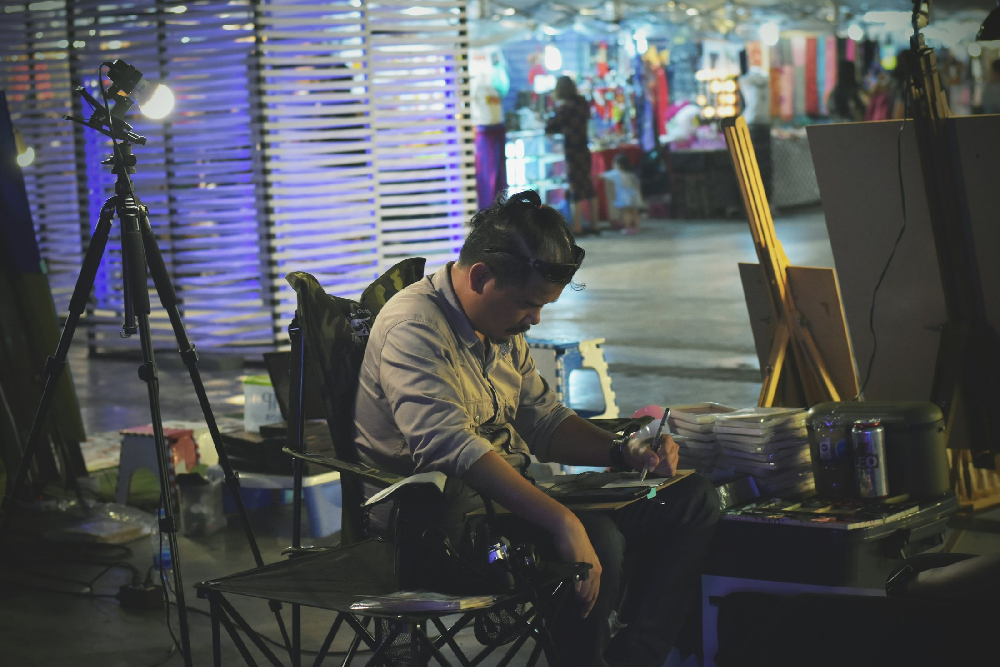

Stagehand Orientation
Orientation gives newer hands a chance to start learning the expectations of the work before everything is moving around them.
That includes safety, communication, basic work practices, asking questions when you do not know something, and understanding what people expect from you on a call.